|
AC Milan - Roda JC (0-1) 28 februari 2002 |
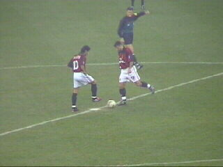
20.45 uur. De aftrap door Rui Costa.
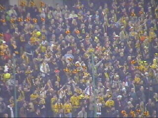
Het fantastiche Roda publiek.
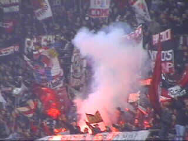
De eerste 10 minuten waren voor Roda, daarna
speelde zich het duel vrijwel geheel voor het doel
van uitblinker Kalac af.
Vanwege een protestactie kwamen de vlaggen,
gezangen en het vuurwerk van de Milanese fans
ook pas na exact 10 minuten tevoorschijn.
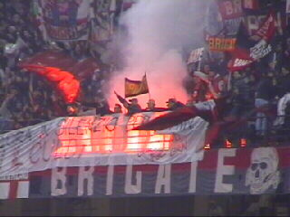
Doodskoppen, leeuwen en namen als brigate en
commando moeten blijkbaar ontzag inboezemen
bij de tegenstander.
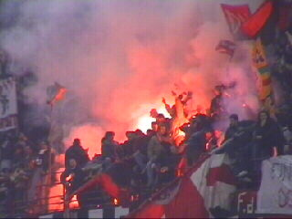
Het vuurwerk geeft een prachtige aanblik.
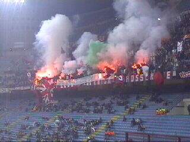
Dit is voor hun gewoon, maar wij moeten ons
behelpen met ballonnen en papiersnippers :-(
De gezangen waren gevarieerd en luid. Slechts
een halfuur lang werd Roda weggezongen.
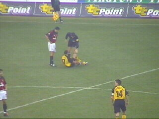
De Duitse arbiter Stark beoordeelt een blessure
van Nygaard.
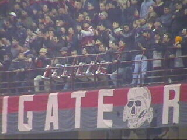
Een van de twee rijen trommels.
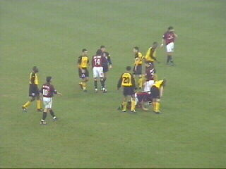
Donati krabbelt overeind. Mari bedelt om een
kaart bij Stark.
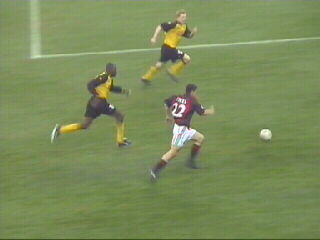
Contra versus Lawal en Lachambre. Lawal zal
dit duel gaan winnen.
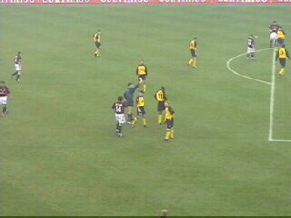
Garba Lawal krijgt het eerste geel.
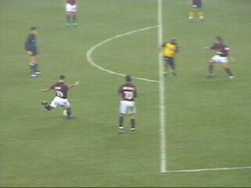
Pegel van Morena uit een vrijetrap. Kalac redt
voortreffelijk.
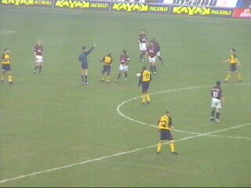
Hier gaat Tchoutang op de bon.
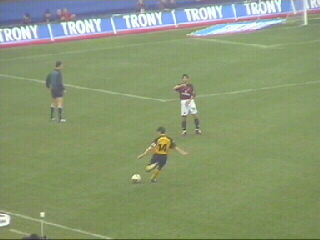
Van Dessel neemt een vrijetrap.
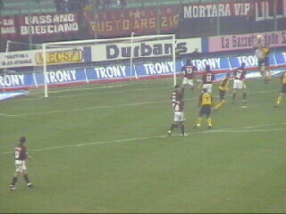
Abbiati redt maar botst met een Roda-speler.
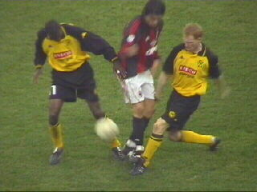
Mari in de tang bij Lawal en Lachambre.
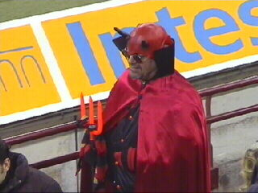
Dit is WEL een rode duivel maar GEEN Belg....
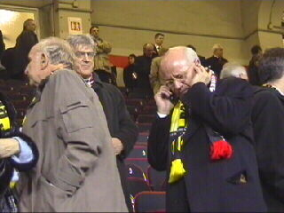
Tussen het mobieltje en de sigaar het hoofd van
onze voorzitter. Links Nol Hendriks wiens
woorden door VI schijnen te zijn verdraaid.
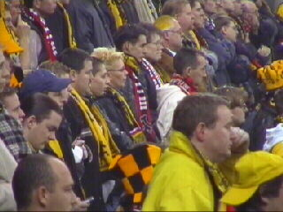
De tweede helft in het Rodavak
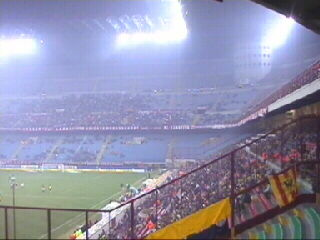
Op de lange zijde zaten ook nog enkele honderden
Roda-supporters.
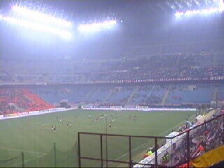
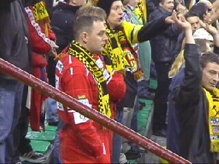
Twee Ferrari-fans?
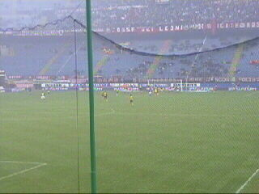
Lawal verzendt de bal hoog door de lucht naar de
geheel vrijstaande Luijpers.
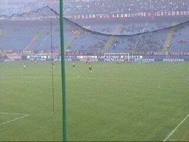
Marc schiet meteen vanuit de draai genadeloos
hard in. Het is een GOAOAOAOAOAOAAOL!
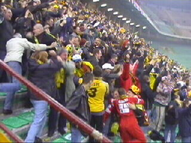
Er barst een enorme vreugde los!
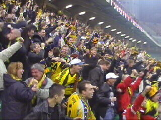
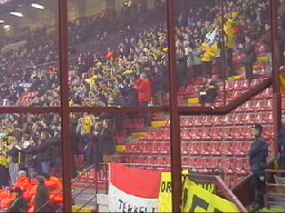
"Sta op als je voor Roda bent"
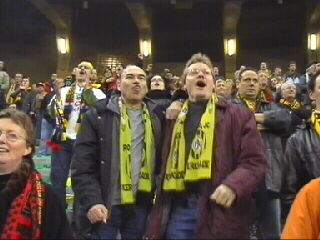
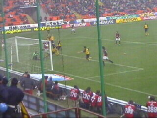
Topkans voor Mari. Vrede kan de bal echter
nog net wegwerken.
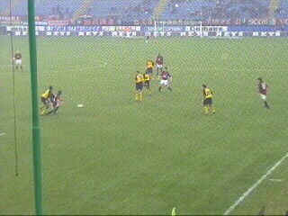
Vrede trekt Mari om.
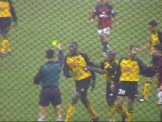
Stark heeft het gezien en geeft geel.
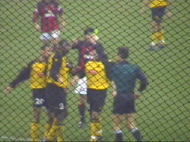
Vrede zegt WHY.....WHY??? De arbiter houdt
niet van deze fragerei en geeft onmiddellijk een
tweede gele kaart.
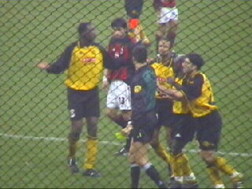
En dat is rood!!!!! Op een cruciaal moment verliest
Roda een van zijn spelers.
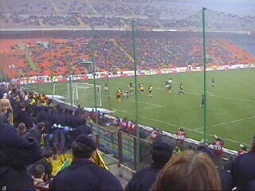
Roda wankelt maar houdt stand.
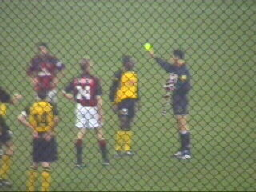
Sonko krijgt ook al geel.
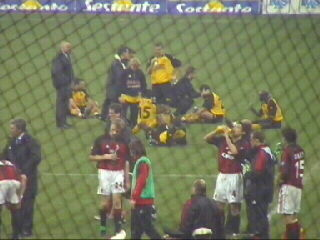
Er moet verlengd worden zonder sudden death.
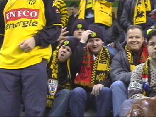
De Bochus-tuupe hebben goede zin.
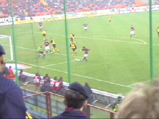
Milan krijgt kans op kans, maar Roda overleeft
de verlenging.
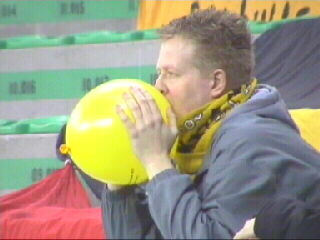
Dit is voer voor doctor Freud.
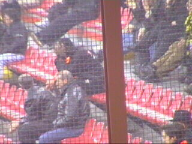
Regillio heeft zich op de tribune vervoegd.
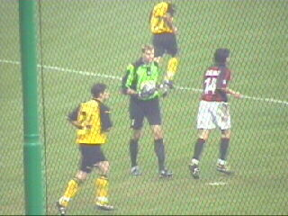
Kalac die ook nog geel scoorde kan definitief
tot held van de wedstrijd uitgroeien.
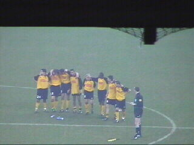
Elkaar oppeppen voor de strafschoppenserie.
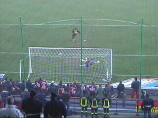
Lawal schiet hier de tweede penalty van Roda
onberispelijk in. Anastasiou deed dat al eerder.
Soetaers, Luijpers en Van der Luer scoorden
alle drie niet waardoor een stunt op het nippertje
niet doorging.

Marc Nygaard is de eerste die zijn shirtje in het
publiek werpt. De ontgoochelde supporters
vinden toch nog de moed en trots om Roda dat
echt alles heeft gegeven waardig te bedanken.
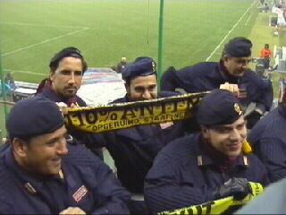
Italiaanse agenten poseren met de twee meest
beruchte Roda-sjaals.
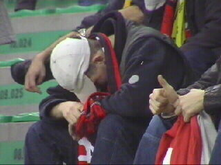
De dreun van de uitschakeling kwam bij sommigen
zeer hard aan.
Als het ooit gekund had, was dat vandaag. Roda
had de scheidsrechter tegen maar ontbeerde ook
net een beetje creativiteit en klasse.
Niettemin mag Roda en al haar supporters met
opgeheven hoofd en met gepaste trots afscheid nemen
van een prachtige UEFA-cup-reeks.
©KPD